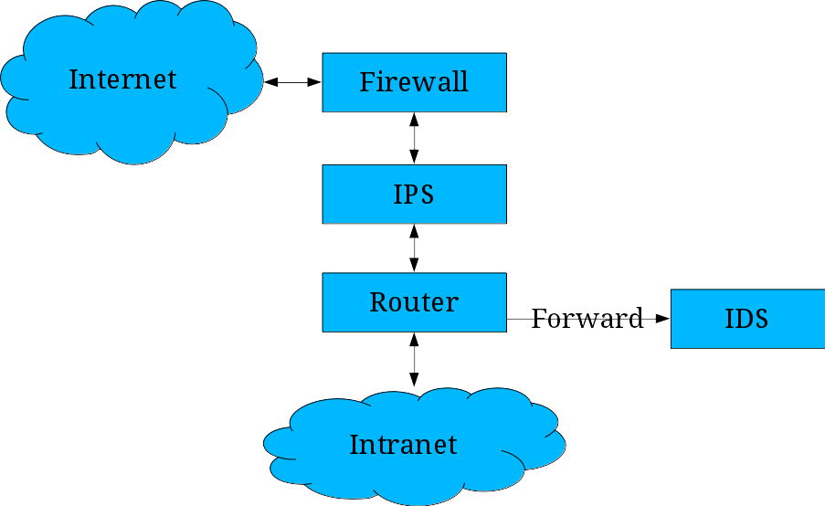
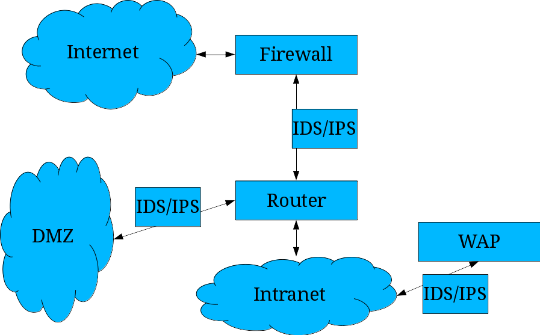
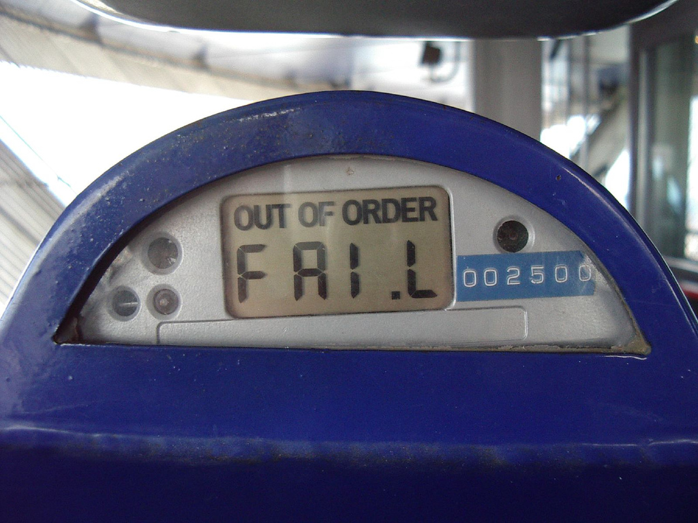
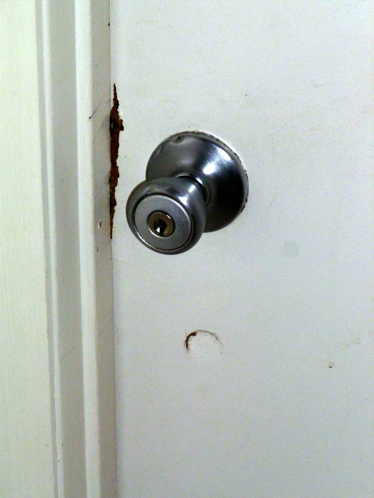
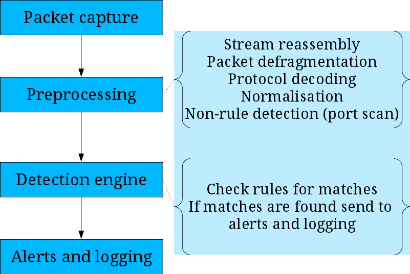
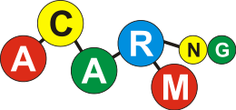

Intrusion Detection and Prevention Systems
Z. Cliffe Schreuders


This content and code (including slides CSS, HTML, and JS) by Z. Cliffe Schreuders is dual licensed under a Creative Commons Attribution-ShareAlike v4.0 International License and GNU Affero General Public License v3.
Lecture recordings are published on the VLE and YouTube.
by Cliffe
Slides created using AwesomeSlides converter by Z. Cliffe Schreuders
Detection
- In order to respond to an event, we need to detect it
Test Your Awareness: Do The Test
Detection
- Because the data is complicated, it helps to automate the process of detecting events
Image Tesla Motors Assembly Line by jurvetson
Terminology
- True positive
- False positive
- True negative
- False negative
- Which are the worst in regards to detection?
 Image
Image Intrusion Detection Systems
- An intrusion detection system (IDS) monitors activity and produces reports and alerts
- Network-based IDS does so by watching network traffic (thereby monitoring multiple computers)
- This is usually what people think of as IDS
- Host-based IDS monitors system activity, such as system calls, logs, files, and file metadata (or only local network activity)
- There is overlap with other topics such as system call monitoring/interposition, and integrity management
Intrusion Prevention Systems
- An intrusion prevention system (IPS), is an IDS that proactively reacts to prevent attacks
- For example, resetting a TCP connection (or reconfiguring a firewall) when it looks like an attack is taking place
- IDS systems may only monitor traffic, but with sufficient processing power it is possible to do something about it (IPS)
- Also known as an intrusion detection and prevention system (IDPS)
Network design
- An IPS is typically placed in-line, so that it can actively respond to the connection
- For example, setting firewall rules, or resetting the TCP connection
- An IDS may be placed anywhere on the network segment, or simply have traffic forwarded to it for it to analyse
Network design: Small organisation
Network design: Larger organisation
Signature-based detection
- Signature-based: A database of signatures is compared to activity or behaviour
- String or pattern matching
- Similar to the way anti-malware looks for known malicious files and processes
- For example, an SQL injection attack, or a known buffer overflow exploit, or shell code
- Contains steps that can be identified
- Cannot detect novel unknown (zero-day) attacks
Image Signature by Wiertz Sébastien
Anomaly-based detection
- Anomaly-based detection looks for activity or behaviour that is out of the ordinary
- Statistical anomaly: activity differs from the baseline (heuristics of what normally happens on your network)
- For example, different ports, protocols, or bandwidth used
- Protocol anomaly: traffic that does not conform to the protocol specifications (for example, something on port 80 that is not HTTP)
Image 1137 by istolethetv
Weaknesses in detection
- There are various ways that attacks can avoid being detected by an IDS
- Anomaly-based: normal changes in activity can cause false positives
- Signature-based: must be kept up-to-date
- If the signature is too specific, the attack can be altered to avoid detection
- Too much traffic to analyse everything
- Encryption, alternative encoding, and so on
- Packet fragmentation...
Packet fragmentation
- Packet fragmentation enables networks that allow different packet sizes to communicate
- A large packet can be fragmented into smaller packets, which are reassembled at the destination
- In the past this has been used to avoid IDS by breaking the content across smaller packets
- This has been addressed in many modern IDS systems, by doing deeper stateful analysis
- For example, Fragroute is an evasion tool
Limitations
- Often cannot tell if an attack was successful, only that it was attempted
- NIDS can only operate with the network segment it is exposed to
Image Breaking in? by Richard Elzey
Complexity
- Lots of rules
- Every packet analysed
- Stateful analysis: packets reassembled and considered in context
- Protocols examined for complex rules
- Can require lots of resources to process
- Complexity also leads to false positives and negatives
Snort
- Snort is a very popular FOSS IDS (can also be used as an IPS)
- Simple signature-based rule language
- Various front-ends are available
- Other tools share the same rule set
Snort
Snort rules
- Rules are prioritised based on complexity
- IP headers
- TCP headers
- Application protocol headers
- Content
Snort rules
- | action protocol src_IP src_PORT direction dst_IP dst_port (msg:"A message"; sid:number; rev:number; more optional options)
- | alert tcp any any -> any 80 (msg:"port 80 connection!"; flow: stateless; rev:1;)
- | alert tcp any any -> any 80 (msg:"looking at top secret stuff"; content:"top secret"; rev:1;)
- For each rule, if all of the conditions are true the rule is matched, and the action takes place
Snort rules
- Actions:
- alert, pass, log
- Protocols:
- tcp, udp, icmp
- Directions:
- ->, <>
- Pattern matching options (slow):
- content: Snort pattern matcher
- pcre: Perl-compatible regexp
Snort rules: Classifications
http://manual.snort.org/node31.html#SECTION00446200000000000000
Snort rules: Content/payload
http://manual.snort.org/node32.html#SECTION00450000000000000000
Snort alerts
- Alerts and logging:
- Syslog
- XML
- Database
- Log files
- With some configuration: network alerts (IM, email, SMS)
Snort commands
- Snort can be used as a sniffer:
- -v TCP and IP packet header information
- -d application-layer headers
- -e data link-layer headers
- For example:
- # binsnort -dev
- Statistics are displayed once the program is stopped with Ctrl-C
Snort commands
- Logging:
- -l logdirectory
- -h network : log relative to your network
- Logs are placed in directories for remote IP addresses
- IDS (don't log everything, use the config):
- -c config_rules_file (snort.conf)
- Also logs to alert.ids file
- Snort comes preconfigured with a snort.conf
Snort commands
- Process a previous capture (from TCPDump, Wireshark, or Snort):
- -r networkcapturefile
Snort rule sets
- Some free:
- Some free to registered users (with 30 day delay), or pay for up-to-date:
Other Snort tools
- Snort can also log in binary modes, which can optimise performance by off-loading logging to a third party process (such as Barnyard), which can for example, write events to a database
- Pulled_Pork is a Perl script for keeping the Snort rule set up-to-date
Monitoring
- Various tools can assist in monitoring sensors
- GUI/Web interfaces
- ACARM-ng: Correlates output from sensors
- Snortsnarf is a Perl script that converts Snort logs into web page reports
- Other Perl analysis scripts: SnortALog, Snort_stat
- ACID is a PHP Web-based Snort analysis
Responding
- It is up to the person reviewing the logs to make sense of the data
- Investigate to determine if a security incident has occurred
- Report the incident and/or respond to it
Other IDS


- Suricata:
- Uses Snort rules
- Bro:
- FOSS, similar to Snort, with protocol analysis and more complex rule possibilities
- Can import (convert) Snort rules
- Popular for researchers
Other IDS vendors, Commercial


- Sourcefire: commercial Snort
- Cisco
- Juniper Networks
- IBM
- McAfee
- TippingPoint
Conclusions
- Network monitoring is critical for rasing awareness of what is happening on your networks
- There are many options, including the FOSS Snort
- Monitoring rules can be fairly straightforward, but often suffer from false positives and false negatives unless very carefully constructed
Recommended reading
- Free Online Book: Babbin, J.; Biles, S.; Orebaugh, A.D. (2009), Snort Cookbook, O'Reilly Commons http://commons.oreilly.com/wiki/index.php/Snort_Cookbook